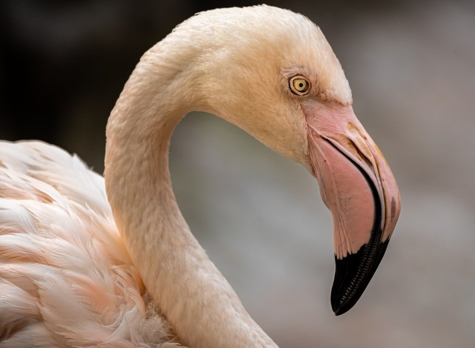

Flamingo Time.
Wade 'til you hear about these guys!
General Information
The flamingo, or Phoenicopteridae, is a type of wading bird that is commonly found in water sources as they forage for food in mud or sand.
Appearance
These birds are characterized by their long, thin necks and long, thin legs. They have small heads however their bills are quite large and heavy, with a prominent break. Young flamingos have straight bills, but as they mature their beaks curve. The feathers, or plumage, of flamingos is not necessarily pink, this depends on their diet. Some can be orange, crimson red or even have some black on their wings. Poorly fed flamingos may be gray or white.
Diet
Flamingos are omnivores whose favourite foods inclue algae, shrimp and snails.
Distribution
Their species can be found throughout the Americas, and some are found in Africa, Asia and Europe.
Species
There are 6 distinct species of flamingos; the greater flamingo, lesser flamingo, American flamingo, Chilean flamingo, Andean flamingo, and James’ flamingo.
Flamingo Fun Facts
The colour pink comes from carotenoid pigment in the flamingo's diet such as crustaceans and plankton.
Flamingos are not an endangered species, they're on the 'least concerned' list.
The name flamingo means 'flame-coloured' in Spanish or Portugese, flamengo.
Flamingos are non-migratory birds, the group will only leave if the area lacks food.
The joints you see on a flamingo are actually their ankle joints. Their knees are higher up but are covered by the feathers.
More Flamingo Info
The beak is bent to accomodate the flamingos' curious eating patterns. By plunging its head into the water and twisting it upside down, it scoops up the food and filters the water out. Flamingos can do this by using the rows of plates lining their beaks.
No one really knows why they stand on one foot. Some theories state it might conserve body heat. However studies have shown this does not cause muscle strain, therefore it's not any physical effort for them to stand on one leg.
Flamingos can produce a certain milk from their upper digestive tracts. Chicks are fed by both the male and female flamingos by producing crop milk.
Stock footage provided by Videovo, downloaded from www.video.net.
Images
Flamingos are very good dancers as it is their mating ritual.
There can be up to thousands of flamingos in a colony in the wild.
Flamingos are serially monogamous by nature.
Flamingos don't breathe when they eat.